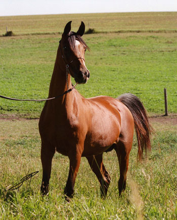
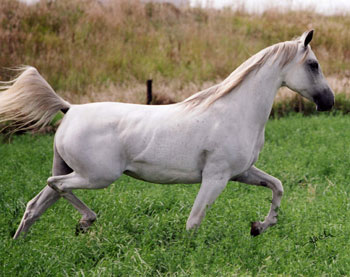
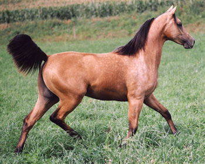

Talk to those who have owned or showed horses from Henriksen Arabians and you will hear the same opinions: Fine horses, good people.
“Decade after decade, Dale and Ruth’s breeding program has withstood the test of time,” breeder and trainer Bob Boggs says. He has known the Iowa family for nearly three decades. “When the fads in breeding changed, they did not. They found the consistency, foal after foal, that seems to be so elusive to others.”
“The Henriksens are a great family whose respect as breeders is worldwide,” agrees Jody Strand, who has two of their geldings in training.
In an era when it sometimes seems that only big-name owners, following trendy, high-dollar programs, can make a mark on the Arabian breeding industry, Henriksen is a refreshing contradiction. In its 43 years of operation, the small Iowa nursery has turned out national and regional champions, both purebred and Half Arabian, and has found a market not only in the United States, but internationally as well. Amazingly, it has achieved this status without straying far from the roots it put down in the 1960s.
The key to these remarkable accomplishments? Everyone will say that it is their mares and it is. But it goes beyond just a proven broodmare band. Henriksen Arabians also is based on in-depth research, an eye for a horse, patience, humility, and the desire to learn—all expressed primarily through Ruth Henriksen, who until her death last August was the inspiration and guiding force behind it. Now her husband Dale and their daughter Ann Henriksen-Brinkman carry on her principles. And their success.

“We wanted to breed something that had the true Arabian type that would be desirable in the show ring and the marketplace,” Dale says of the program he and Ruth agreed upon from the start. That may sound simple, but for a young family with no background in exotic horses, that meant starting from scratch.
Ruth and Dale Henriksen were natives of Audubon, Iowa, what most people would call “the salt of the earth.” They have lived there all their lives; Ruth taught in a rural school, while Dale farmed 800 acres of crops, cattle and hogs. Married in 1951, they were raising a family at the time they became intrigued with Arabians in 1962, and they maintained a clear vision about their new sideline. “Farmers are always very frugal,” Dale says wryly, so they never just went out and bought the best. They learned about quality, and about buying the best they could afford and then developing the expertise to improve every generation.
Their first horse, a broodmare, came from Lloyd and Evelyn Burton’s program in Wisconsin. Unfortunately, 10 weeks after delivering a foal, she died. The Henriksens remained steadfast: They sold the foal, added the sale money to the insurance settlement on the mare, and went shopping at Garth Buchanan’s Comar Arabians.
That single decision was critical in their growth. Even that early on, before Ruth had had an opportunity to learn as much as she did over the years, they selected successful and respected breeders—with proven horses—when they bought their bloodstock. They came home with Komijne, a Handeyraff mare out of Carousel, a Gaysar daughter. The pedigree was heavy with *Raffles/domestic/Crabbet blood, and she reflected that extreme type.
Their next purchase came from another well-known breeder of the era, Tish Hewitt, of Friendship Farm. Living Doll was by Geym, out of a Raffi mare, again focusing on *Raffles blood, this time with a dash of Polish in the distaff.
From these two mares would come today’s Henriksen program. “We consider those two our foundation mares,” says Ann Henriksen-Brinkman. Very few other broodmares were purchased over the years, and none have had lasting impact in their program. Their successful producers were bred and raised at home.
From the start, the Henriksens had no illusions about their mares. “We had a high percentage of *Raffles and Skowronek blood,” Dale explains. “They were good-bodied mares, but they needed a little longer legs and necks, and a little prettier heads.”
For a time, they stood DR John, an Azraff son, out of Living Doll, but although he put better foals on the ground, they realized they needed more of an outcross for their herd. DR John did, however, provide one of the most entertaining stories in Henriksen family lore.
It was on a Sunday morning in 1978 that Ruth Henriksen took the stallion to an Iowa show. “He had already bred a mare that day,” Ann notes, “and he was showing with a 40-something lady amateur. He was not expected to win.” But to everyone’s surprise, DR John did win—over another contender showing with an up-and-coming young man from Minnesota named David Boggs. “We kept that blue ribbon in our house. I think it’s still hanging up!” Ann laughs. “That just made Mom’s day.”
By that time, they were already friends with the Boggs family; David had selected their homebred gelding Shaitaan for a client, little knowing that history was about to be made. In 1977, he showed Shaitaan to the title of Scottsdale Supreme Grand Champion Gelding, the first of many Scottsdale wins for the trainer.
Over the years, they experimented with a number of stallions, but never found exactly what they needed. Ruth studied everything she could find, collecting registry volumes, comparing pedigrees and photographs, and looking at horses whenever she had a chance (from 1976 through 2003, she and Dale never missed a Scottsdale Show).
It was 1980 before she found what they needed. Her research into Spanish bloodlines had intrigued her, and on a trip to Dallas for the annual IAHA Convention, she looked at an exhibition of horses from BruMarBu Arabians. When she saw how the ranch’s *Barich de Washoe crossed on Comar Bay Beau mares, she knew she had their new line.

In 1981, Henriksen Arabians purchased the yearling Beraiah, by *Barich de Washoe, out of Beau’s Belle, by Comar Bay Beau. As a stallion, he reemphasized the beauty of Azraff, while adding the strength of his Spanish sire, with longer legs and necks and improved bodies. Although the American Arabian industry was entranced with imported horses at the time, the Henriksens knew that they had what they wanted standing in their own pastures. And time would prove them right.
Beraiah not only improved their herd, he added a new dimension to their program. Early in Beraiah’s career, Dale and Ruth experimented with breeding his daughters to Saddlebred stallions, and the resulting Half Arabians directed national attention to the farm.
But the golden cross for Beraiah was DR Dahlingaznetta, a granddaughter of both foundation mares, Komijne and Living Doll. Of their 13 foals, 10 have been shown, and their records made Dahlingaznetta an Arabian Aristocrat Mare.
By the time he died in 2004, just a week after Ruth, Beraiah had sired nearly 200 registered purebred and Half Arabian foals. Sixty-five of them showed successfully, with national championships, top tens, and regional awards on their records. Their achievements spanned the spectrum of the show ring for both purebreds and Half Arabians in the open, amateur and youth divisions. In addition to halter, they won titles in hunter pleasure, western pleasure and country English pleasure, as well as show hack, reining, side saddle, native costume, walk/trot, and hunt seat equitation. Best known now are national winners DR Coors Lite, DR Brio, DR Regalo, DR Bravissimo and Moonflassh.
But it is through his daughters that Beraiah is becoming best known. They have produced some of the most decorated show horses in the industry, including eight-time National Champion or Reserve Half Arabian Western Pleasure horse DR All Keyed Up; NSHR National Champion and Scottsdale Junior Champion SP Fortune Five Hundred; multi-National Champions DR Silver Bullet, The Heiress to Fame, and DR Gilty Pleasures; and National Champion and twice Top Ten Dapper in Silver FFA.
At the 2002 Canadian National Show, Beraiah was ranked 11 th among sires of performance winners, and Henriksen was listed 18 th in breeders of purebred winners. In 2004 competition at the U.S. and Canadian Nationals, the stallion’s get and grandget won a unanimous championship, four reserves and six top tens.
Another critical factor in the success of Henriksen Arabians is that they have tried hard over the years to be realistic about their horses. When they get ready to send horses out for training, they invite the trainers to the farm.
“We like them to come and look at the horse first, so that they can take their pick,” Ann says. “It gives us an outside opinion of how our horses look, compared to the rest of the industry—it helps keep us from being barn-blind. Experienced outside opinions provide an objective view of our program, and we try to consider everything when we make our breeding decisions.”
Since the late 1980s, Henriksen Arabians has expanded its program to include performance horses as well as halter. “Our goal has always been sales,” Ann says.

To that end, they are ruthless in their evaluation of their foals; every one gets a chance to find what he or she can do well. “There is no breeding program in the world which is going to have every foal meet their expectations,” she observes candidly. With the number of strong contenders the farm turns out, she can afford to be candid. “You have to find a place for every horse, and they’re not all going to be national champions.”
Certainly the key to the reliable quality in Henriksen horses is the broodmare band, now approaching its seventh generation. “Our mares are so similarly bred that they’re very consistent in what they produce,” she explains. “We can take full sisters and breed to the same stallion and get very similar animals.”
The broodmare band at Henriksen Arabians now is composed predominantly of mares by Beraiah and Padrons Psyche, and the stallions currently used most are Affirmmed, DS Major Afire and Psytadel. The Half Arabian operation has expanded from breeding primarily to the Saddlebred stallion The Color of Fame, into a program of Quarter Horse crosses as well. “We’re experimenting with some new bloodlines,” Ann says, “but at the moment, we’re using Ima Dun Kid.”
The statistics continue to multiply. In the last decade, the farm’s sales universe has grown to include South America (where representatives have won national championships) and Europe, where a filly they bred was a reserve junior champion.
Through the years, as Henriksen Arabians has become known as a source of excellent bloodstock, Dale and Ruth—and now Ann—have kept their perspective. Dale and Ann smile when they’re asked if, after 43 years, they have reached their goals.
“Our goals are always evolving,” Ann Henriksen-Brinkman replies. “The epitome is a moving target. Each time we reach our goals, we find that we’ve already set new, higher ones.”
“First, let us say that we are honored to comment about Dale and Ruth Henriksen’s breeding program. We can only dream of achieving comparable accolades, breeding Arabian horses.
Many breeders have tried to achieve such results. Few have succeeded, and even fewer continue to succeed today. Decade after decade, Dale and Ruth’s breeding program has withstood the test of time. When the fads in breeding changed, they did not. They found the consistency, foal after foal, that seems to be so elusive to others.
In our opinion, the Henriksens are one of the few whose program truly represents the definition of ‘breeding program.’ They have given us all something to strive for in breeding Arabian horses, and we congratulate them. God bless them.” ~ Bob and Janene Boggs
“I’ve been impressed with the Henriksen breeding program for years—the quality of horse is always good; they breed great horses. It starts with good mares, and they have a lot of them. They breed consistently every year, and they’ve been doing that for many years. I’ve had their horses off and on for probably the last four or five years, but I’d seen them winning in the show ring long before that, both their own horses and ones with other owners. I’ve had a great time with them—they’re just great people, and they breed great horses. ~ Janel Hesson
“Over the past several years, it has been my pleasure to train, show and market horses from the Henriksen family. They are a great family whose respect as breeders is worldwide. They earned this reputation by years of producing national champion level Arabians and Half Arabians. I applaud the Henriksens for breeding the type of horses that are a pleasure to train, easy to sell, an honor to show and that win!! I wish them all the best, and many more years of success.” ~ Jody Strand
“They are some of the most established and distinguished breeders in the country. The horses that they breed are quality—they have proven themselves in other breeding programs and in the show ring. The Henriksens believed in what they were doing; when fads were changing, they never did. They continued their breeding program, and it worked out awfully well. They knew exactly what they were doing.” ~ Gene Beethe